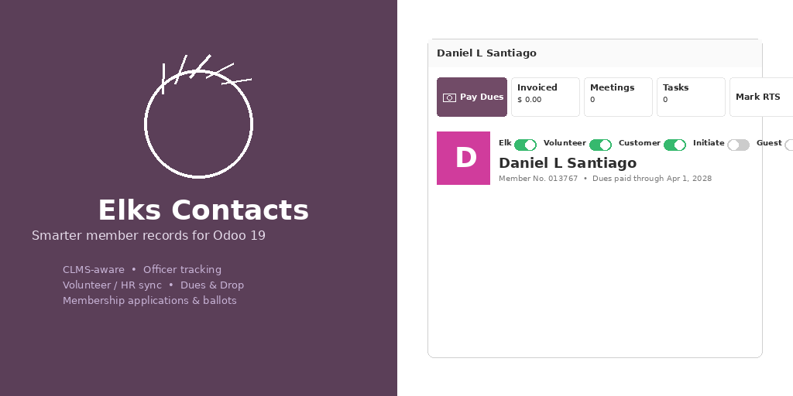
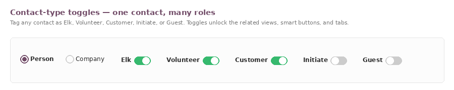
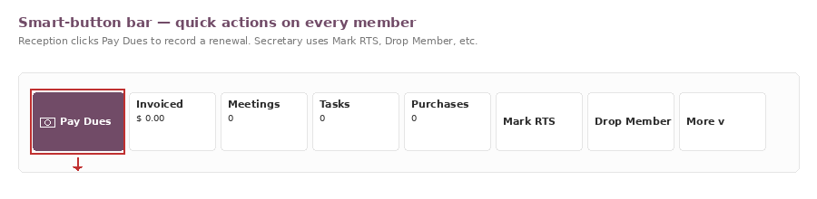
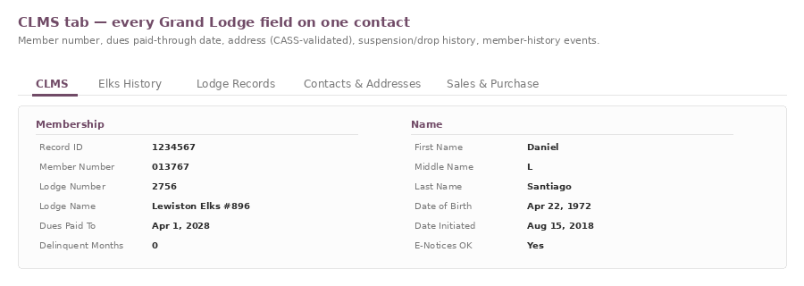

Elks Contacts turns Odoo's Contacts app into a
full Elks Lodge member system. It stores every CLMS field on
res.partner, keeps members tagged with role toggles
(Elk / Volunteer / Customer / Initiate / Guest), tracks officer terms,
committee assignments, member history, suspensions, drops, and Return-to-Sender
flags — and stays out of the way for non-member contacts.

Tag any contact as an Elk, Volunteer, Customer, Initiate, or Guest. The toggles reveal the matching views, smart buttons, and tabs — so a kitchen volunteer who happens to be a Life member sees both worlds on one record.

The smart buttons turn the contact form into the daily operating console. Pay Dues sits at the front for reception; Mark RTS flags returned mail; Drop Member opens the drop wizard with the audit trail wired up. Every button respects the member toggles — non-Elks never see them.

Every Grand Lodge CLMS field lives on the contact — member number, dues-paid-through date, household, raw address, USPS / CASS validation, spouse data, member-history events, officer terms, life-member dates, military service, occupation. The CLMS tab keeps it all together and the importer matches on member number to prevent duplicates.

company_type = person;
the name is composed from First / Middle / Last when blank.hr.employee for timesheets
and skills, with a duplicate-merge wizard.x_detail_member_num update the existing
contact instead of creating a duplicate.name, title, street, city,
zip, state_id, country_id,
phone, mobile, fax, email);
state and country are resolved by code or name.x_is_member, x_is_elks_officer,
x_is_dues_paid) drive the toggle visibility, search filters, and
any module that depends on Elks role data.elksfrs (Financial Reporting System) hooks into the dues fields and adds the Pay Dues workflow. elkssecretary uses the CLMS Status to drive the Secretary's queue. elksattendance, elksmaintenance, elkscharity, elksrvparking, and elkspurchase all reference the role groups defined here. Install elkscontacts alone for a directory; layer the others on as needed.
x_detail_* fields.
Odoo 19.0 (Community & Enterprise). Depends on the standard contacts,
hr, hr_skills, mail, and website
modules. License: LGPL-3.
Issues, feature requests, or lodge-specific customization: open a ticket in your repo or contact the maintainer at dannysantiago.info.